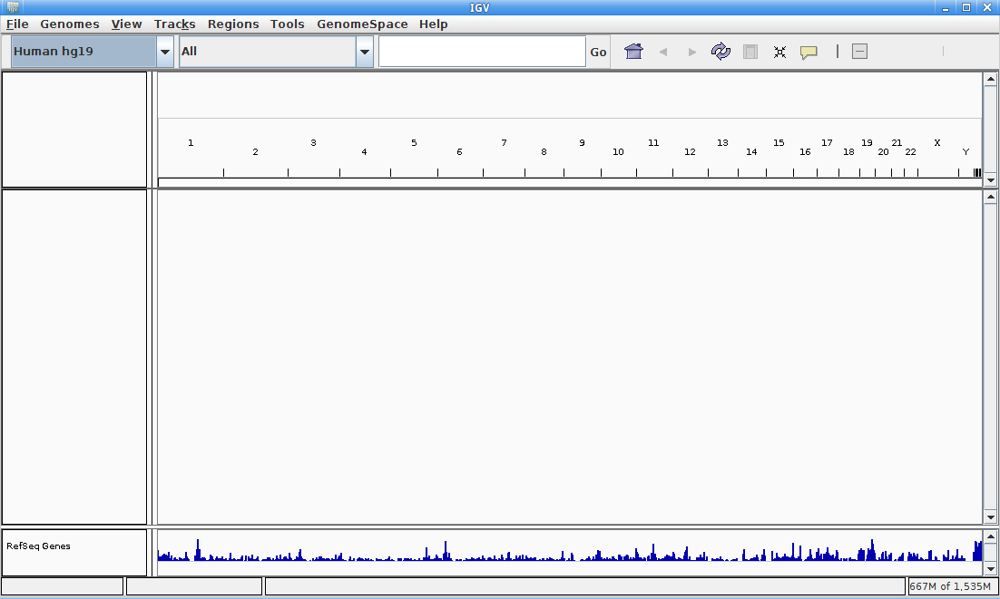

Return to help page
Return to help page
IGV, the Integrative Genomics Browser is a standalone Java application for the browsing of genomic information from multiple sources. It is a product of the Broad Institute at MIT. https://www.broadinstitute.org/igv/ For a complete guide to the use of IGV, please see the official usage guide: https://www.broadinstitute.org/igv/UserGuide
IGV is started automatically when the Desktop/mpsforensics.sh script is run by a user. In order for the SNP/STR viewer web application to allow the user to "click through" on an locus and automatically load the desired BAM entries, IGV must already be open. If it is closed by the user, the easiest way to reopen IGV is to simply close the pipeline application and restart it.
For the purposes of easily evaluating SNPs and STRs we have provided BED files for the AI, II SNPs and CODIS genomic and Y-chromosome STRs in the mpsforensics/genomic_resources folder. Simply load them through the menu at top left of the screen File -> Load from File... then navigating to the genomic_resources folder and selecting the desired annotation files.
The result of "clicking-through" on a chosen STR allele will look as follows:
 Return to help page
Return to help page